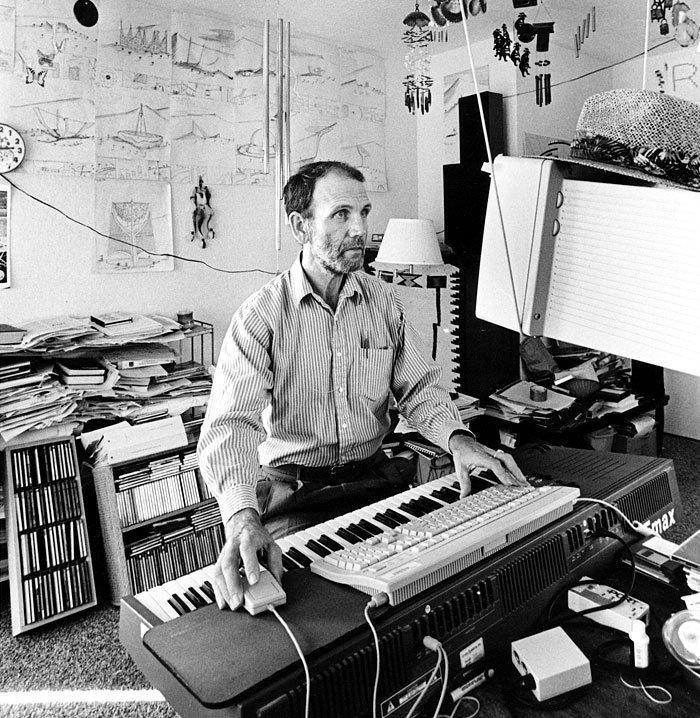

Generative Music
Playing Sounds
We've already discussed how to add images to our page uploading an image file and setting it as the src of a nn.create('img') element, but we could also upload audio files and set them as the src of an nn.create('audio') element. Typically this will create a simple audio player interface for that file on your website, but we don't have to display these default controls. Instead we can write our own code to trigger different sounds (or pieces of sounds) on events of our choosing. We could also generate visuals at the same time, essentially turning our browser into an audio/visual instrument like the piece Patatap (video above) a "visual sound kit application" with animations by computer programmer Jono Brandel and Japanese electronic duo Lullatone (James Seymour and Yoshimi Tomida).
Check out the Audio Element notes to learn more about how to use the audio element to produce something similar to Patatap.
Synthesizing Sound
When it comes to making sound on the web, we're not limited to audio files we can load into our projects. Using the Web Audio API we can actually synthesize sounds from scratch.
In the early days of electronic music artists like Delia Derbyshire (of the BBC Radiophonic Workshop) would record samples on tape and then play those tape back at different speeds to turn those "samples" into a musical isntrument. Similar to this example from the Audio Element notes, but they would also synthesize sounds from scratch, as explained in the video, by using analog electronic sound generators which could produce basic tones from simple mathematics: the sine function. We've used the Math.sin() function to generate values that oscillate back and forth between some min/max values which we've used to position elements on the screen, but those same values can be used to generate sounds digitally in the browser.
While it's possible to generate these tones from scratch using the sine function, we don't have to because the Web Audio API provides an interface for doing just that called createOscillator(), you can see that in use in this example. If we can generate a tone in any frequency (ie. pitch) in the browser, then we could also use code to generate musical compositions...
[the Analytical Engine] might act upon other things besides number, were objects found whose mutual fundamental relations could be expressed by those of the abstract science of operations, and which should be also susceptible of adaptations to the action of the operating notation and mechanism of the engine . . . supposing, for instance, that the fundamental relations of pitched sounds in the science of harmony and of musical composition were susceptible of such expression and adaptations, the engine might compose elaborate and scientific pieces of music of any degree of complexity or extent.
Ada Lovelace (sketch of the Analytical Engine) 1842
Generating Music
Ada Lovelace, considered by many to be the first programmer, wrote about the possibilities of computer generated music as early as the mid 1800s, but it wouldn't be for another 100 years before computers were advanced enough to both synthesize sounds from scratch as well as algorithmically create musical compositions. It's important to note here that these are not mutually exclusive concepts. One can create their own compositions using computer synthesized sounds (this is very common in modern music) just as someone can create a system for writing musical compositions and then perform those compositions with real life musicians playing traditional instruments. This is exactly what David Cope did with EMI, Experiments in Musical Intelligence or EMI back in the 1980s.
While suffering from writers block, with a looming deadline to finish a commissioned opera, David Cope was motivated to come up with some unconventional way to finish his composition. After talking with a programmer friend he was convinced the solution to his problem was to write a program which would analyze all music he'd ever written and then create new musical compositions in his own style. The program worked, and could in fact create new compositions in any style you could input data for. This might sound like modern day AI, and in some ways it is very similar, but this was before the days of "large language models", Cope's "model" is actually much simpler something he wrote himself. You can learn more about it by listening to this Radiolab episode on Cope's Experiments in Musical Intelligence.
There's is a lot of gray area between writing code which performs a composition you've written out note for note yourself (be it in musical notation or JavaScript) and writing code which generates the entire musical composition (either randomly or based on input or patterns form some external data set). As generative artists, it's the space in between those extremes that contains the most creative possibilities, deciding how much to leave to chance and how much to compose ourselves. If we outsource too much to chance we might rob ourselves of the expressive possibilities that art/music provides, at the same time, adopting a purely traditional approach to writing music might mean missing out on new possibilities and perspectives for how music can grow in the future.
One example is the album 1-Bit Symphony by Tristan Perich. Following in the tradition of other minimalist composers which preceded him (like Phillip Glass, Steve Reich, Brian Eno and others) Perich was interested in the beauty that arises from simplicity, both in the synthesis of sounds--all the tones are generated using simple "1-bit" square waves--but also in the repetitive nature of the compositions. But where composers like Phillip Glass and Steve Reich, who would embark on long marathon performances, would eventually need to stop playing their instruments, Perich's performer is the micro-chip which runs on code... and code can perform forever. The last piece in 1-Bit Symphony has a run time of "infinity", which would be impossible with traditional music methods, but trivially easy with generative art.
There is of course no "right" answer to the question: how much control vs how much chance is the right balance? A classical composer might argue we should leave nothing to chance, while the Dadaist artist might argue to leave it all to chance. This is really a personal choice, one musicians have been experimenting with long before Ada Lovelace speculated on the computer's (or Analytical Engine as it was called then) role in musical composition.
Like all ideas, the idea of a generative system for musical composition can be traced back even further, at least another century before Lovelace's quote, to a musical "game" played by classical composers called Musikalisches Würfelspiel. This was a "musical dice game" (translation from German) where fragments of musical phrases would be randomly arranged by rolling dice, not dissimilar to the Dada system for generating poems discussed last week. Composers like Mozart and others before him would use systems like this to get around their own writers block, to escape their bias or just to have a little fun.
Meditaion #5
For our meditation this week we'll create something which incorporates sound somehow. This could be something of an audio/visual instrument, like Patatap, using sound files (mp3, ogg, etc) within an audio element as discussed in the notes. Or it could be sound synthesized from scratch, using the Tone.js library. Our meditation could simply trigger sounds based on some interaction or event, but it could also create algorithmically driven musical compositions by making use of some of the musical functions and techniques demoed in the Web Audio API notes.